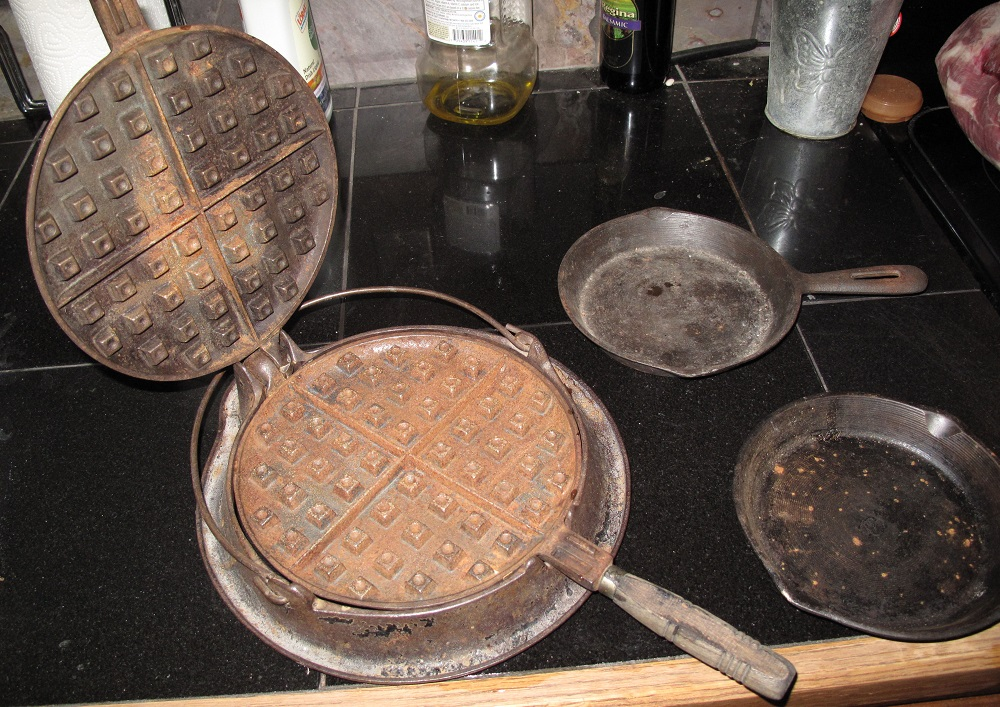

How are Waffles made? |
|---|
A waffle iron is a utensil that uses two specially shaped pans to cook batter into what is known as a waffle. Modern Waffle irons use electricity to heat the batter, but within the batter is a leavening agent. These leavening agents cause the batter to expand to fill the two pans, which causes an even cooking rate amongst the batter. |
What is the Difference between Waffles and Pancakes? |
Though they are both favorites for eating breakfast, they do have differences. Waffles consist of more fat generally than pancakes. Waffles are made on a waffle iron specific for the waffle to be produced while pancakes can be made on many things but usually made in a pan on a stove. As many people know, this causes the shape and texture of the two to differentiate to its unique design. |
The good 'ol Waffle Iron |
| Waffle Irons now are very useful and simple to function; just press a button and put in specially made batter and a waffle is produced, but that is not how it always was. Waffle irons have been around for quite a while, but the first ones were two iron pans that stamped together to press the waffle into its shape while it was cooked on the stove or oven.  |